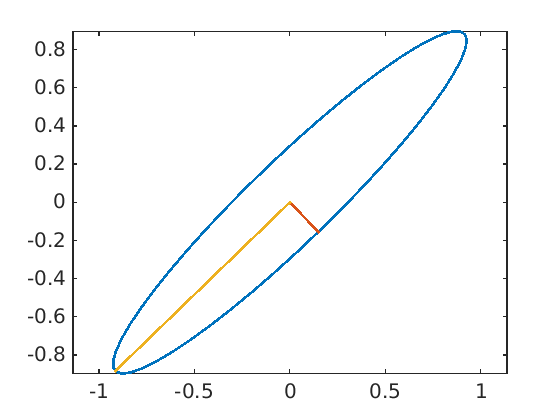

Correct!
The image of the unit ball through a linear function is an ellipse centered at the origin with axis given by the eigenvectors of $AA^\top$. This can be verified by plotting the $y^k = Ax^k$ for points $x^k$ on the unit circle
t = linspace(0,2 * pi, 50);
y = a3 * [cos(t); sin(t)];
plot(y(1, :), y(2, :))
hold on, axis equal
Next, adding to the plot the eigenvectors, scaled by the eigenvalues
[v, d] = eig(a3 * a3');
v1 = sqrt(d(1, 1)) * v(:, 1);
v2 = sqrt(d(2, 2)) * v(:, 2);
plot([0 v1(1)], [0, v1(2)])
plot([0 v2(1)], [0, v2(2)])
we obtain the following figure
